Menu: Administração · Situação do manual: Em ajuste (prints e conferência de 17/11/2026) · Fonte dos prints: versão nova.
Para que serve
O Profissional é o cadastro das pessoas que trabalham na empresa e usam o sistema: dados pessoais e documentos, endereço, contatos, setor, cargo, matrícula, grupo, ocupações e funções profissionais. É o primeiro passo para criar um usuário: Profissional (Incluir) → Conta usuário (login e validade) → Perfil (permissão). A tela é usada quando uma pessoa entra, muda de função ou sai.
Antes de começar (o que precisa existir)
| O que precisa existir | Para quê | Onde se cadastra |
|---|---|---|
| Documentos da pessoa (CPF, nome da mãe, data de nascimento, endereço com CEP) | São campos obrigatórios do cadastro | Com a pessoa ou com o RH |
| Grupo | Campo obrigatório do cadastro; define a que almoxarifados a pessoa tem acesso no Estoque (do legado) | Cadastros > Grupo de usuários |
| Função profissional (se a pessoa exerce alguma) | Aparece na grade Funções; outros módulos usam, por exemplo, para saber quem é Auditor | Cadastros > Funções profissionais |
| Setor (opcional) | Lista de locais da estrutura funcional | Cadastros > Estrutura funcional |
Passo a passo
- No menu Administração, abra Profissional. A tela mostra o quadro Pesquisa com os filtros Nome, CPF, Grupo, Ativo e Função profissional, os botões LIMPAR, PESQUISAR, IMPRIMIR e o botão X verde (Excel), o atalho Incluir e a lista com ID, NOME, CPF, ATIVO, Editar, Excluir e Ver log.
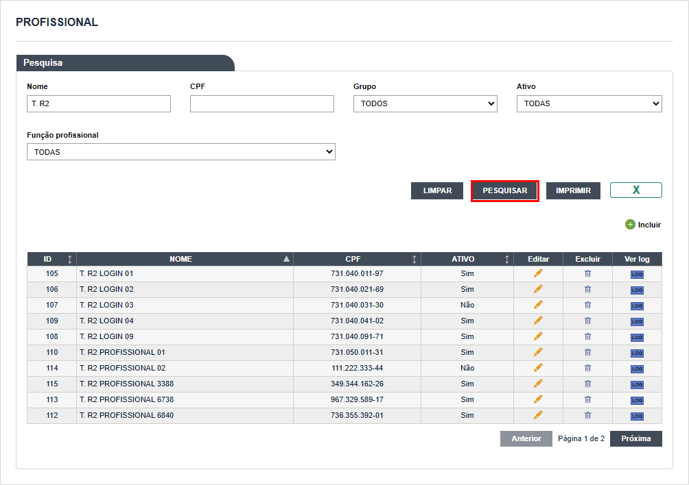
A imagem mostra o filtro Nome com "T. R2" e a lista (10 linhas por página), com o botão PESQUISAR marcado. Cada linha tem o lápis, a lixeira de exclusão e o ícone LOG.
- Clique em Incluir. O cadastro abre em branco com os quadros Dados Pessoais, Endereço, Setor (Setor, Cargo, Matrícula, Especialização e Grupo), Ocupações, Funções e Justificativa.
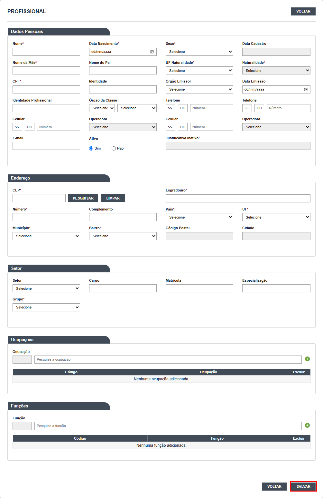
A imagem mostra o formulário inteiro em branco: Dados Pessoais (Nome*, Data Nascimento*, Sexo*, Nome da Mãe*, UF Naturalidade*, Naturalidade*, CPF*, telefones com DDI 55 já preenchido, E-mail, Ativo = Sim e Justificativa Inativo* travada), Endereço, Setor, Ocupações, Funções e o botão SALVAR.
- Clique em SALVAR sem preencher nada. O sistema recusa antes da pergunta de confirmação, com uma mensagem por campo obrigatório.
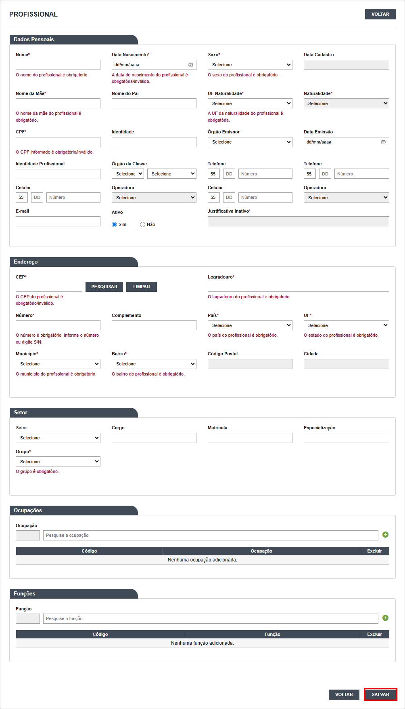
A imagem mostra as 14 mensagens em vermelho sob os campos obrigatórios, por exemplo "O nome do profissional é obrigatório." sob Nome e "O CPF informado é obrigatório/inválido." sob CPF. Não aparece faixa geral no alto.
- Preencha Dados Pessoais: Nome, Data Nascimento, Sexo, Nome da Mãe, UF Naturalidade, Naturalidade e CPF; e, se tiver, Nome do Pai, Identidade, Órgão Emissor, Data Emissão, Identidade Profissional, Órgão da Classe, telefones, celulares, operadora e e-mail. Em Endereço, digite o CEP e use PESQUISAR (em 17/11/2026 o botão não preencheu o endereço nem mostrou mensagem: candidato a defeito R2A-PRO-02, ver Cuidados e falhas) ou escolha País, UF, Município e Bairro; informe Logradouro e Número (digite S/N se não houver). Em Setor, escolha Setor, Cargo, Matrícula, Especialização e o Grupo*. Em Ocupações e Funções, pesquise, escolha e clique no + verde; o item entra na grade abaixo.
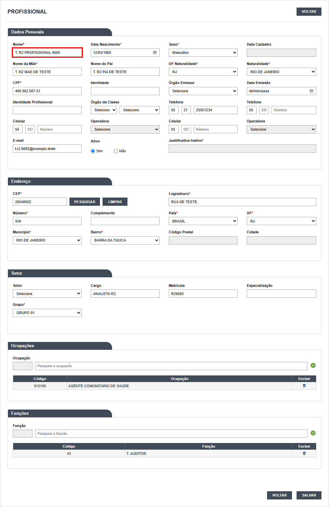
A imagem mostra o formulário inteiro preenchido, com o campo Nome marcado, uma função e uma ocupação já na grade.
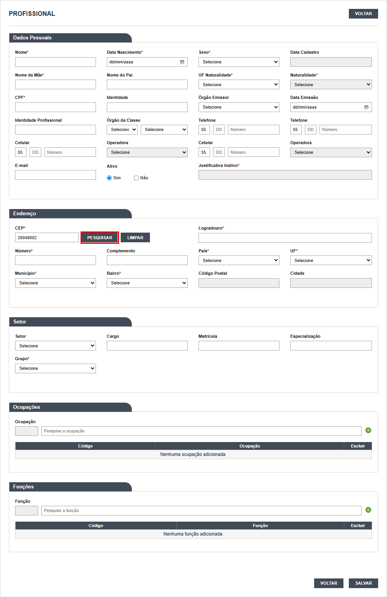
A imagem mostra o CEP digitado e, depois de clicar em PESQUISAR, o endereço continua em branco e nenhuma mensagem aparece (R2A-PRO-02).
- Clique em SALVAR. O sistema pergunta "Confirma a inclusão do item?". Responda SIM.
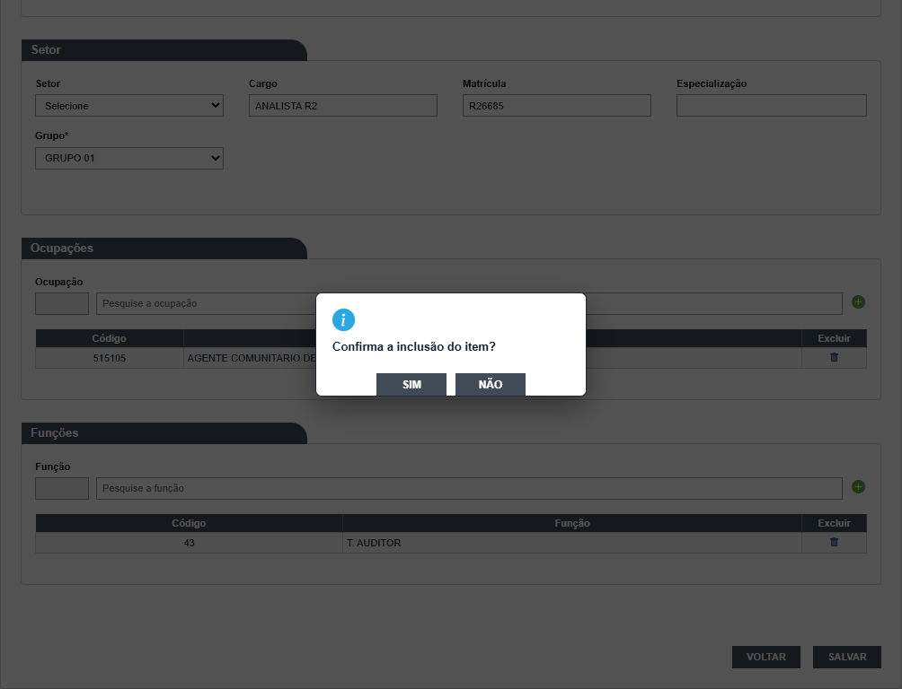
A imagem mostra o pop-up "Confirma a inclusão do item?" com os botões SIM e NÃO.
- Aparece "Inclusão realizada com sucesso!". Depois do OK, a tela volta para a lista (conferido em 17/11/2026). Atenção: o pop-up aparece duplicado (dois iguais empilhados); é preciso clicar em OK duas vezes (candidato a defeito R2A-PRO-01).
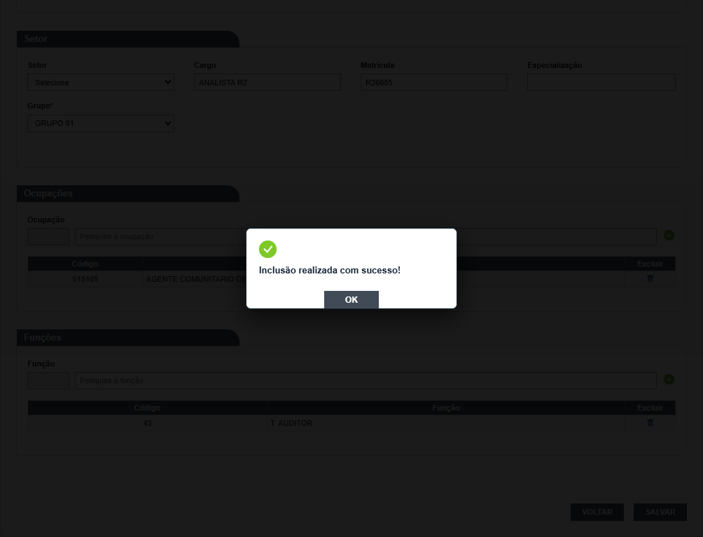
A imagem mostra o pop-up "Inclusão realizada com sucesso!" com o botão OK; há um segundo pop-up igual por baixo.
- Para consultar ou alterar, clique no lápis da linha. Não existe ícone separado de "visualizar": o lápis abre o formulário preenchido.
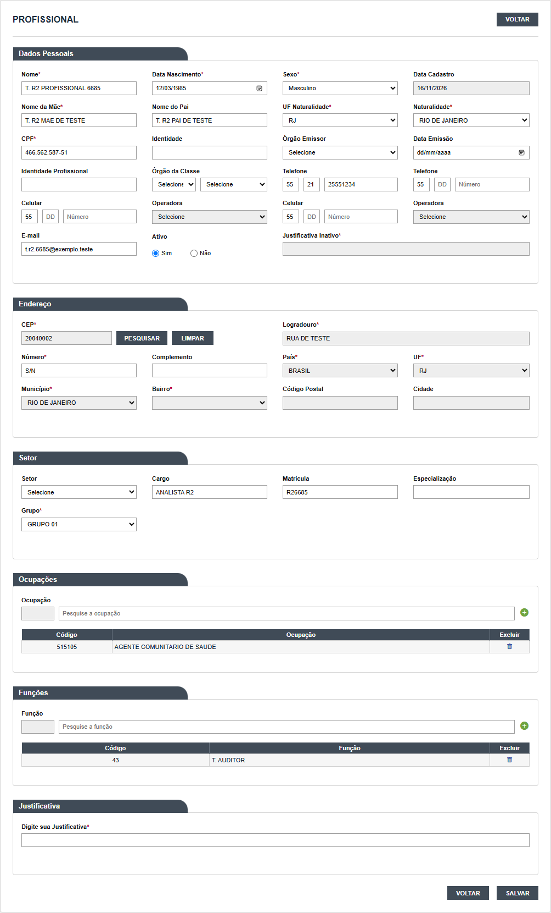
A imagem mostra o profissional aberto para alteração, com o formulário inteiro e o quadro Justificativa no fim.
- Para alterar, mude os campos e preencha, se quiser, Digite sua Justificativa*. O sistema pergunta "Confirma a alteração do item?" e responde "Alteração realizada com sucesso!". Atenção: o sistema salva sem exigir a justificativa; a justificativa digitada não é gravada e o telefone alterado não entra no histórico (DV-PRI-N-015, repetiu em 17/11/2026).
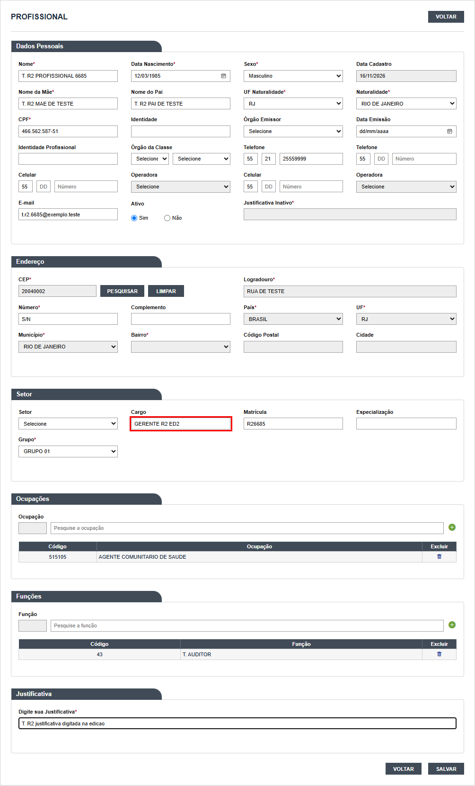
A imagem mostra a edição com o Cargo marcado e a justificativa digitada.
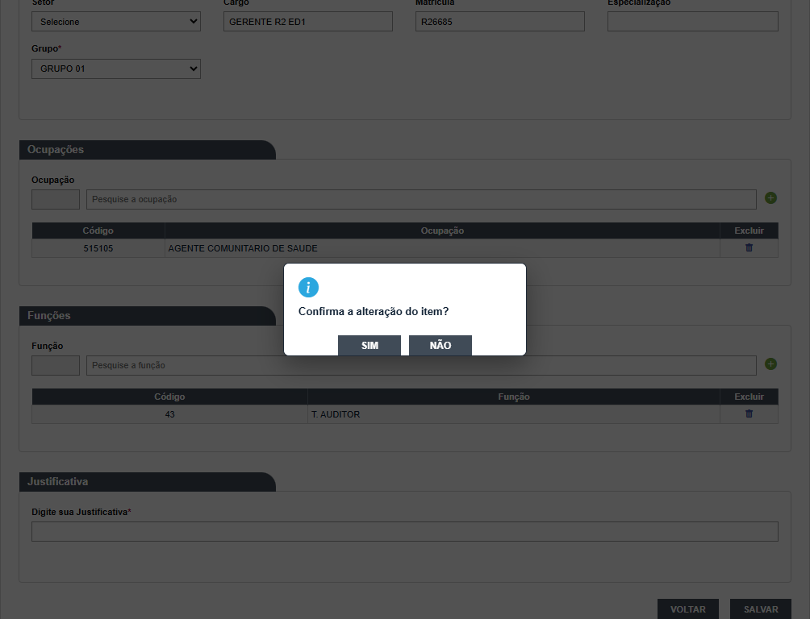
A imagem mostra o pop-up "Confirma a alteração do item?" numa alteração feita sem justificativa digitada.
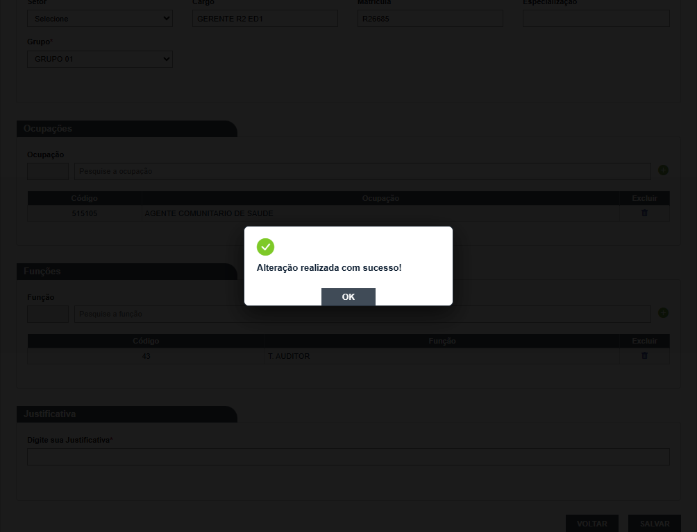
A imagem mostra "Alteração realizada com sucesso!": o sistema salvou mesmo sem justificativa.
- Para inativar, marque Ativo = Não e preencha Justificativa Inativo* (obrigatória). Sem ela aparece "A justificativa é obrigatória para desativar o profissional." sob o campo. O histórico grava "ATIVO SIM → NÃO" e "JUSTIFICATIVA INATIVO", e a pessoa passa a ser recusada no Login ("Usuário inativo.").
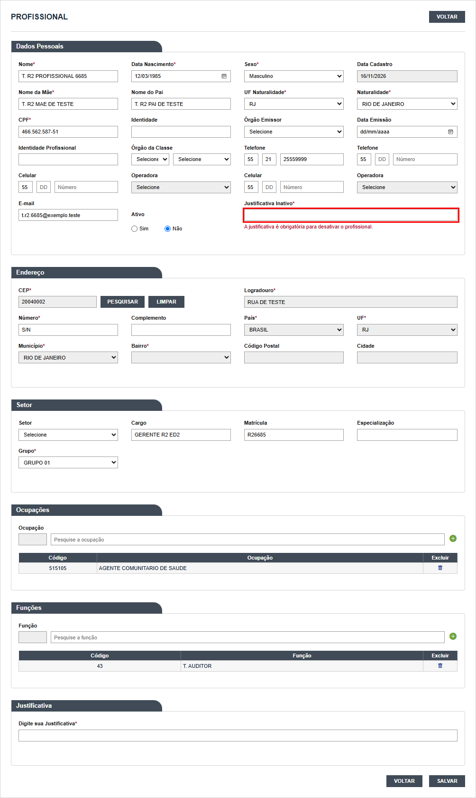
A imagem mostra Ativo = Não sem justificativa e a mensagem "A justificativa é obrigatória para desativar o profissional.".
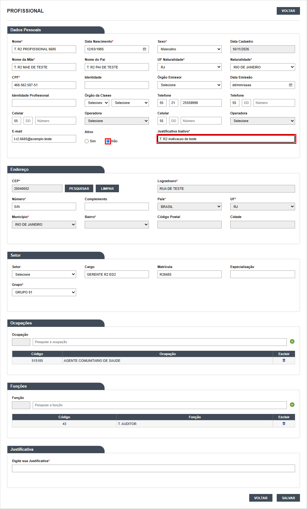
A imagem mostra Ativo = Não com Justificativa Inativo preenchida.
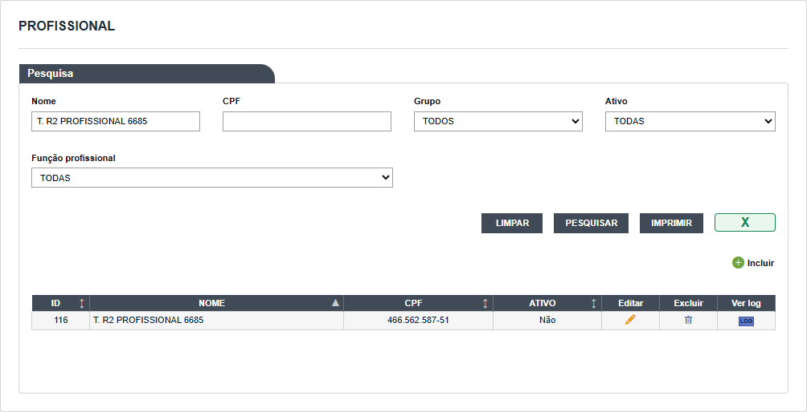
A imagem mostra a lista com ATIVO = Não na linha do profissional.
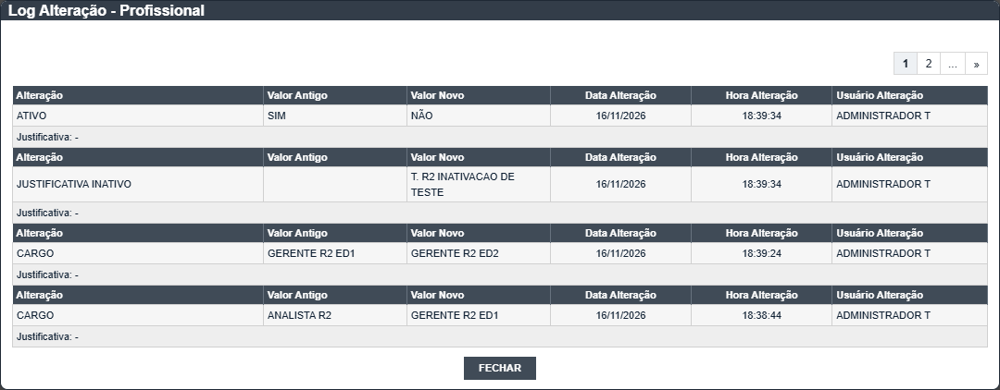
A imagem mostra o histórico com "ATIVO SIM para NÃO" e "JUSTIFICATIVA INATIVO". O histórico tem paginação (1, 2, ...) quando há muitas linhas.
- Para excluir, clique na lixeira da linha. Abre a tela de exclusão (nome, nascimento, mãe e Justificativa); sem justificativa o sistema recusa ("A justificativa é obrigatória."); o sistema pergunta "Confirma a exclusão do item?" e, com justificativa, a pessoa some da lista ("Exclusão realizada com sucesso."; o pop-up também aparece duplicado, R2A-PRO-01). A exclusão é recusada ("Não foi possível efetuar a exclusão, pois existem associações para este usuário.") para profissional com conta de acesso, que já criou registros ou que tem função e ocupação cadastradas, mesmo sem conta; só foi excluído com sucesso um profissional sem função, ocupação nem conta.
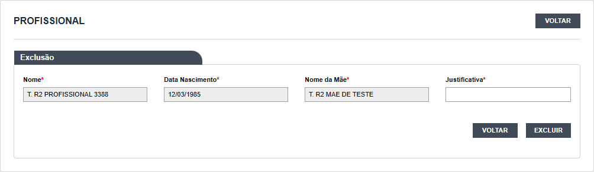
A imagem mostra a tela de exclusão (nome, nascimento, mãe e Justificativa) com os botões VOLTAR e EXCLUIR.
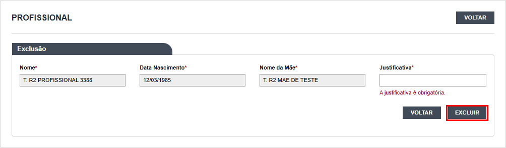
A imagem mostra "A justificativa é obrigatória." sob o campo, com o botão EXCLUIR marcado.
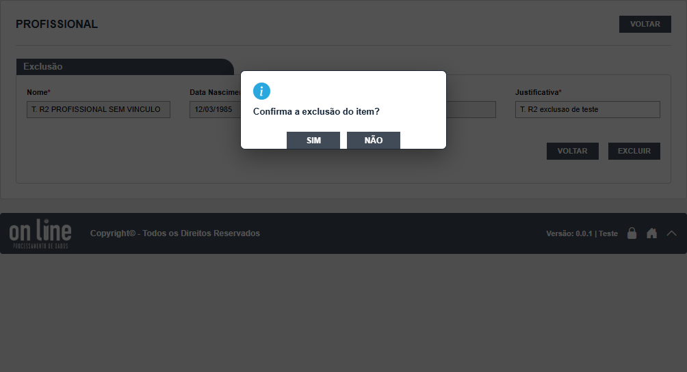
A imagem mostra o pop-up "Confirma a exclusão do item?".
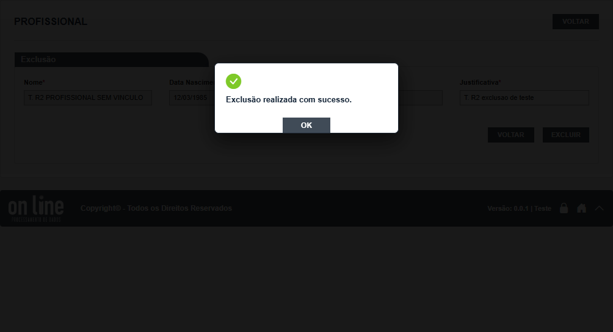
A imagem mostra o pop-up "Exclusão realizada com sucesso.", também duplicado.
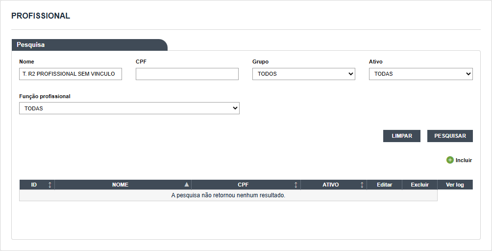
A imagem mostra a pesquisa pelo nome do excluído: "A pesquisa não retornou nenhum resultado.".
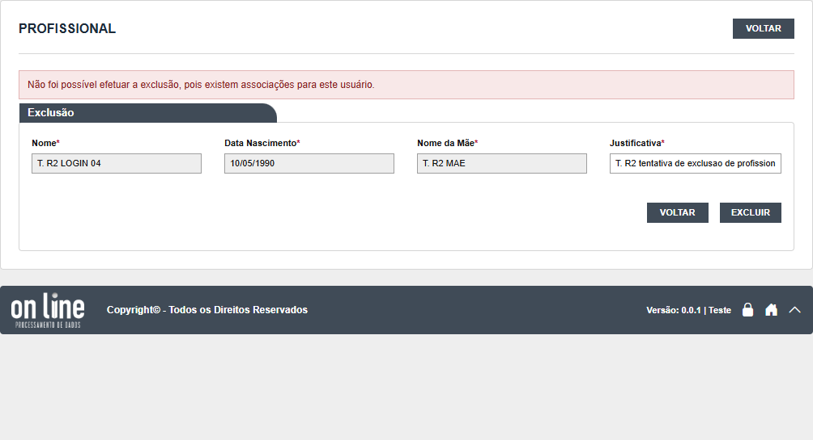
A imagem mostra "Não foi possível efetuar a exclusão, pois existem associações para este usuário." para um profissional com conta.
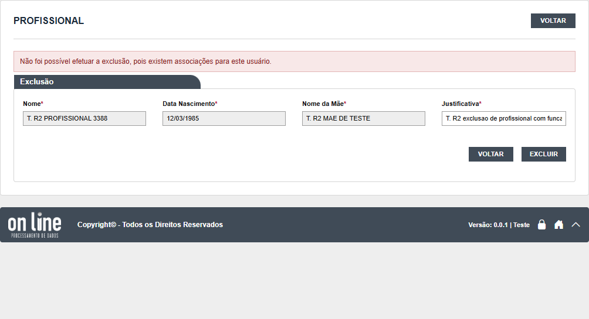
A imagem mostra a mesma recusa para um profissional sem conta, só com uma função e uma ocupação.
-
Para ver o histórico, clique em LOG.
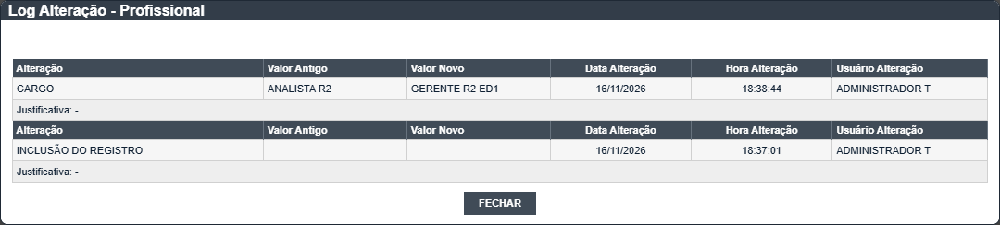
Histórico só com o cargo e a inclusão · clique para ampliar A imagem mostra o histórico de um profissional em que se mudaram cargo e telefone: só o CARGO e a INCLUSÃO têm linha; o telefone alterado não aparece e a justificativa é "Justificativa: -".
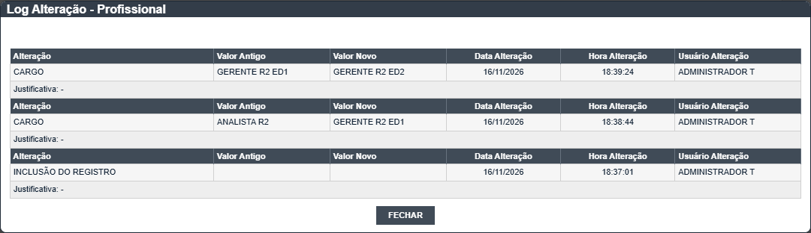
Histórico depois de editar com justificativa digitada · clique para ampliar A imagem mostra o histórico depois da edição com justificativa digitada: continua "Justificativa: -".
-
IMPRIMIR gera o PDF "RELATÓRIO DE USUÁRIO", uma ficha (quadro) por pessoa, que respeita o filtro da lista mas traz "SUA LOGO AQUI" e o CPF sem pontuação; o campo Ativo do PDF vem preenchido (SIM/NÃO). O botão X gera o Excel, que ignora o filtro e traz todos os profissionais, com colunas de Login, CPF, E-mail, Perfil e outras (DV-PRI-N-039).
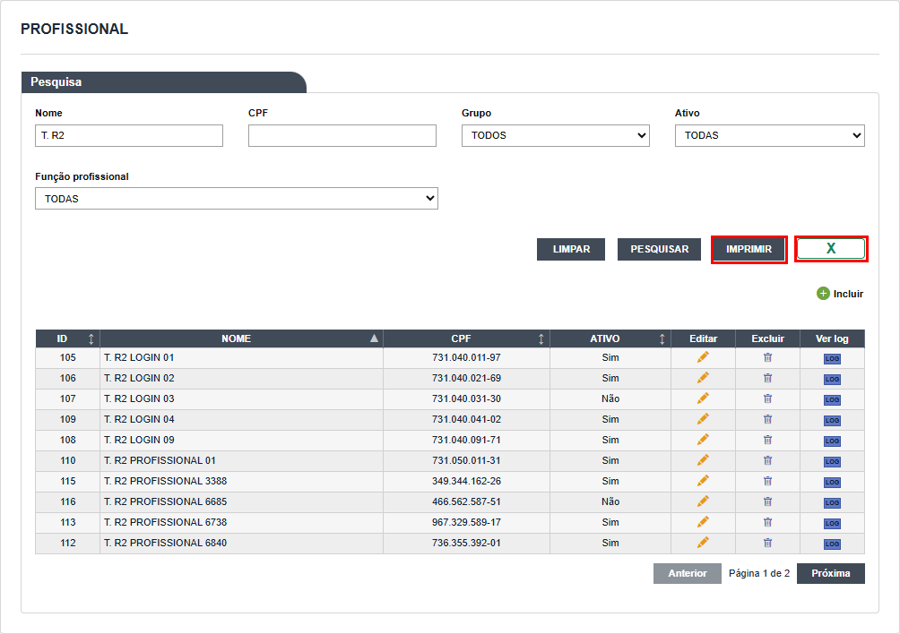
Lista filtrada com IMPRIMIR e X marcados · clique para ampliar A imagem mostra a lista filtrada com os botões IMPRIMIR e X marcados.
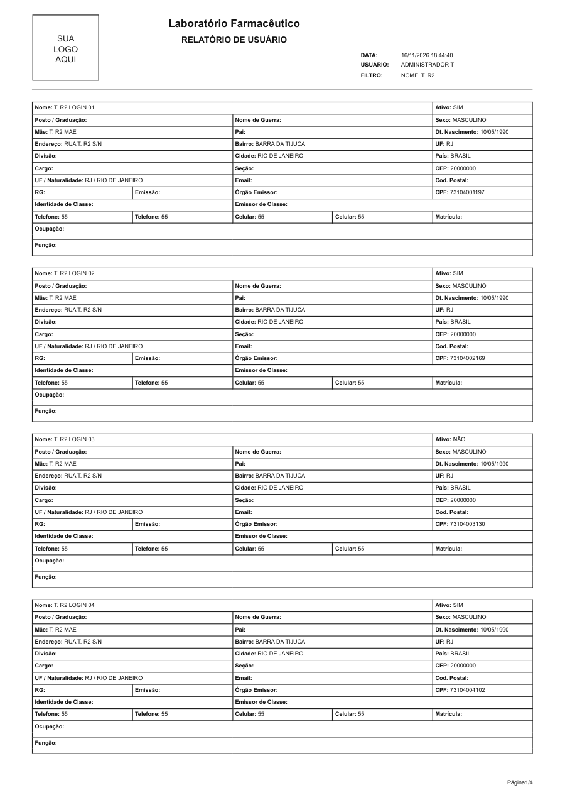
PDF Relatório de usuário com o filtro da lista · clique para ampliar A imagem mostra o relatório com "FILTRO: NOME: T. R2", o texto "SUA LOGO AQUI" e o CPF sem pontuação.
Ícones e botões da lista
| Ícone ou botão | O que faz | Quando aparece |
|---|---|---|
| PESQUISAR | Lista os profissionais conforme os filtros | Sempre |
| LIMPAR | Esvazia filtros e lista | Sempre |
| IMPRIMIR | Gera o PDF da lista, uma ficha por pessoa (respeita o filtro) | Para quem tem a função de imprimir (não aparece no perfil só de consulta) |
| X verde (Excel) | Gera o Excel com Login, CPF, E-mail, Perfil e outras colunas (hoje ignora o filtro) | Para quem tem a função de imprimir |
| Incluir (sinal de mais verde) | Abre o cadastro em branco | Habilitado para quem tem a função de incluir |
| Lápis (Editar) | Abre o cadastro | Em cada linha |
| Lixeira (Excluir) | Abre a tela de exclusão com justificativa | Em cada linha |
| LOG (Ver log) | Abre o histórico | Em cada linha |
Botões e ações
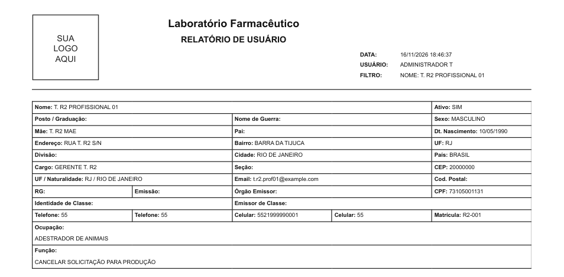
A imagem mostra o PDF do IMPRIMIR com o filtro: a ficha de uma pessoa, com o quadro "SUA LOGO AQUI" (registrada pela outra sessão do robô, fora do CSV).
| Botão ou ação | Quando aparece | O que faz | Para onde leva |
|---|---|---|---|
| PESQUISAR / LIMPAR | Na lista | Lista ou esvazia | Fica na lista |
| IMPRIMIR / X (Excel) | Na lista, para quem pode imprimir | Gera o PDF (uma ficha por pessoa) ou o Excel | Arquivo |
| Incluir | Na lista | Abre o cadastro em branco | Formulário |
| Lápis, Lixeira, LOG | Em cada linha | Editar, excluir ou ver o histórico | Formulário, tela de exclusão ou janela do histórico |
| SALVAR | No formulário | Confere, pergunta e grava | Lista (conferido em 17/11/2026) |
| VOLTAR | No formulário | Sai sem gravar | Lista |
| CEP: PESQUISAR / LIMPAR | No quadro Endereço | LIMPAR limpa o endereço; PESQUISAR não preenche nada (R2A-PRO-02) | Fica na tela |
| + verde de Ocupações e Funções | No formulário | Acrescenta o item à grade | Só grava ao salvar (do legado; a confirmar) |
Mensagens do sistema
| Mensagem exata | Quando aparece |
|---|---|
| Confirma a inclusão do item? | Ao salvar um profissional novo |
| Confirma a alteração do item? | Ao salvar uma alteração |
| Confirma a exclusão do item? | Ao excluir |
| Inclusão realizada com sucesso! | Depois de incluir |
| Alteração realizada com sucesso! | Depois de alterar |
| Exclusão realizada com sucesso. | Depois de excluir |
| A pesquisa não retornou nenhum resultado. | Pesquisa sem resultado |
| Sem permissão para incluir / alterar / excluir profissional; Sem permissão para consultar log | Dicas dos ícones apagados no perfil só de consulta |